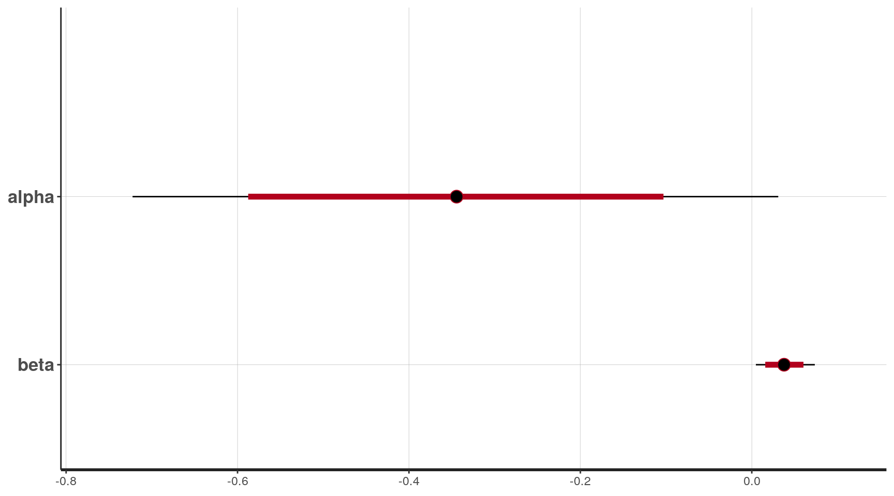

Introduction to programming with Stan
Key learning objectives for today
Stan is a probabilistic programming language
There is an extensive ecosystem built around Stan (R, python, etc
)
Can perform
- Full MCMC sampling using Hamiltonian Monte Carlo sampling
- Approximate Bayesian inference
- Penalized maximum likelihood
We’ll focus exclusively on MCMC
Stan documentation
Stan documentation is extensive:
Hamiltonian Monte Carlo concepts (1)
See Stan Reference Manual (chapter 15) and Betancourt ([1]) for a more thorough explanation.
Gibbs sampling and Metropolis-Hastings samplers use a random walk
approach to sampling the posterior
- Leads to inefficient sampling in high dimensional space (or poor
geometry)
We can sample more efficiently by using information about the
shape of the posterior distribution
Use principles from Hamiltonian dynamics to sample from the
posterior
Hamiltonian Monte Carlo concepts (2)
Particle moves through the parameter space according to its
potential energy (-log-posterior) and kinetic energy
(momentum).
The HMC algorithm starts at a specified initial set of parameters
\(\theta_0\).
For a given number of iterations, a new momentum vector is
sampled and the current value of the parameter \(\theta\) is updated according to
Hamiltonian dynamics
- Using the leapfrog integrator with step size \(\epsilon\) and number of steps \(L\)
- How far it moves depends on the momentum and geometry of the
posterior surface
A Metropolis acceptance step is applied
HMC tuning
The HMC algorithm has three parameters, and the sampling efficiency
is sensitive to their choice:
- step size, \(\epsilon\)
- automatically optimized during warm-up to match an acceptance-rate
target
- metric, \(M\), an approximation of
the covariance (curvature) of the posterior
- automatically estimated during warm-up sample iterations
- number of steps taken, \(L\)
- adaptively tuned using the No U-Turn Sampler (NUTS)
Stan automatically optimizes \(\epsilon\) and \(M\), but (if really necessary) other
setting can influence the automatic selection of them.
Divergent transitions
A divergence
arises when the simulated Hamiltonian trajectory departs from the true
trajectory as measured by departure of the Hamiltonian value from its
initial value.
- If the posterior is highly curved, very small step sizes are
required for this gradient-based simulation of the Hamiltonian to be
accurate.
- When the step size is too large (relative to the curvature), the
simulation diverges from the true Hamiltonian.
- When this divergence is too high, the simulation has gone off the
rails and cannot be trusted.
Efficiency of HMC vs Metropolis-Hastings
Samples generated by random-walk Metropolis, Gibbs sampling, and
NUTS. The plots compare 1,000 independent draws from a highly correlated
250-dimensional distribution (right) with 1,000,000 samples (thinned to
1,000 samples for display) generated by random-walk Metropolis (left),
1,000,000 samples (thinned to 1,000 samples for display) generated by
Gibbs sampling (second from left), and 1,000 samples generated by NUTS
(second from right). Only the first two dimensions are shown here.
Stan programs
A Stan program is organized into a sequence of named
blocks.
In each block:
- variable declarations
- followed by programming statements
All block types are optional but they must enter the model in a
specific order.
Every variable used in a Stan program must have a declared data type
(like c++)
Variables declared in each block have scope over all subsequent
statements (including statements in other blocks)
- One exception: variables declared in model block are local to the
model block
Code blocks
The following are valid code blocks and must appear in this
order:
- functions
- data
- transformed data
- parameters
- transformed parameters
- model
- generated quantities
<block type>{
... declarations ...
... statements ...
}
Data block
- Declaration of variables that are read in as data
- Allows only declarations, no programming statements
data {
int<lower=1> N; // total number of observations
int<lower=0, upper=1> Y[N]; // binary response variable
vector[N] x; // predictor
int prior_only; // should the likelihood be ignored?
}
Variable types:
int for integer valuesreal for continuous valuesvector for column vectors (real)row_vector for row vectors (real)matrix for matrices (real)
Any type can be made into an array type by declaring array arguments.
For example,
real x[10];
matrix[3, 3] m[6, 7];
x is a one-dimensional array of size \(10\) containing real valuesm is a two-dimensional array of size \(6 \times 7\) containing values that are
\(3 \times 3\) matrices
NB: Array declaration is clearer in Version 2.26.
Parameters block
The variables defined in this block are the parameters being
sampled by Stan
HMC and NUTS are implemented over a multivariate probability
density that has support on all of \(\mathbb{R}^n\)
Hamiltonian Monte Carlo requires the gradient of the
(unnormalized) log probability function with respect to the
unconstrained parameters
- the unconstrained version of the parameters is what’s sampled or
optimized.
parameters {
real alpha; // intercept
real beta ; // slope
}
Model block
- Where the log probability function is defined.
- All variables defined here are local to the model block
- May not be defined with constraints
model {
// log-likelihood contributions
if (prior_only==0) {
Y ~ bernoulli_logit(alpha + beta*x);
}
// prior didstributions
beta ~ normal(0,3);
alpha ~ normal(0,3);
}
Generated quantities block
- Derived quantities based on parameters, data, and (optionally)
random number generation
- Applications of posterior inference that can be coded in the
generated quantities block include:
- forward sampling to generate simulated data for model testing,
- generating predictions for new data,
- calculating posterior event probabilities
- calculating posterior expectations
- calculating log likelihoods, deviances, etc. for model
comparison.
generated quantities {
vector[N] Ysim; // response variable
vector[N] log_like; // log-likelihood, for calculating LOO
for (n in 1:N) {
Ysim[n] = bernoulli_logit_rng(alpha + beta*x[n]);
log_like[n] = bernoulli_logit_lpmf(Y[n] | alpha + beta*x[n]);
}
}
Functions block
- A block to declare user-defined functions
- Function definitions and declarations may appear in any order,
subject to the condition that a function must be declared before it is
used.
For example,
real cv(real mu, real sigma) { return(mu/sigma); }
A function that returns a real with two arguments of
types real and real named mu and
sigma.
Example logistic regression model
- As an example, let’s model the probability of ECOG status=1 as a
function of observed baseline tumor size
\[
\text{logit}\left(P(\text{ECOG}=1 ~|~ x)\right) = \alpha + \beta x
\]
- Stan code for this model is in
../model/stan/logistic_regression_example.stan
Running the model using rstan
- Define data as a list
- Provide initial values for Markov chains (optional)
- Call Stan
stan_data <- list(N = nrow(dos),
Y = dos$ECOG,
x = dos$SLD0/10,
prior_only = 0)
stan_inits <- function() {
list(
alpha = rnorm(1, mean=0, sd=2),
beta = rnorm(1, mean=0, sd = 1)
)
}
fit_lr <- stan(file = '../model/stan/logistic_regression_example.stan',
data = stan_data,
chains = 4,iter = 2000, warmup = 1000,
init = stan_inits,
cores = 2)
Stan output
print(fit_lr, pars = c('alpha','beta'))
. Inference for Stan model: logistic_regression_example.
. 4 chains, each with iter=2000; warmup=1000; thin=1;
. post-warmup draws per chain=1000, total post-warmup draws=4000.
.
. mean se_mean sd 2.5% 25% 50% 75% 97.5% n_eff Rhat
. alpha -0.34 0.01 0.19 -0.72 -0.47 -0.34 -0.21 0.03 1108 1
. beta 0.04 0.00 0.02 0.00 0.03 0.04 0.05 0.07 1064 1
.
. Samples were drawn using NUTS(diag_e) at Mon Jun 26 13:21:47 2023.
. For each parameter, n_eff is a crude measure of effective sample size,
. and Rhat is the potential scale reduction factor on split chains (at
. convergence, Rhat=1).
plot(fit_lr, pars=c('alpha','beta'))

Diagnostic plots
samples <- spread_draws(fit_lr, alpha,beta) %>% rename(Chain = .chain)
mcmc_trace(samples, pars = c('alpha','beta'))
mcmc_scatter(samples, pars=c('alpha','beta'))
Workbook Stan01
Expanding the logistic regression model to include a power term
\[
\text{logit}\left(P(\text{ECOG}=1 | x)\right) = \alpha + \beta x^\gamma
\]
Time to event model with a simple hazard model
Let’s re-fit the overall survival model, using a Weibull baseline
hazard and a proportional effect of covariates.
- Note this is a different parameterization than used in
brms
\[
\begin{align*}
h_i(t) &= h_0(t) \times \exp(\beta \times \text{RTS}_i) \\
h_0(t) &= \lambda_0 \times \alpha \ \times t^{\alpha-1}\\
\\
H_i(t) &= \lambda_i t^\alpha \\
S_i(t) &= \exp(-\lambda_i t^\alpha)
\end{align*}
\]
Under the standard assumption that censoring times are independent of
event times, the individual contributions to the log-likelihood function
are
\[
\ell_i(\theta) = \begin{cases}
\log h_i(T^*_i) - H_i(T^*_i) & \text{for } \delta_i = 1 \\
-H(T^*_i) & \text{for } \delta_i = 0
\end{cases}
\]
Model fitting
The code is in
../model/stan/weibull_example_v2.stan.
The Rmarkdown file for running the example is in
weibull_example.Rmd
Integrating the hazard function
Stan has some built-in functions to do integration.
We’ll start with the simple one-dimensional case before moving to
systems of ODEs.
Function block to define the integrand
For comparison, we’ll have Stan integrate the Weibull hazard
- Not something we’d do in practice
- Simply for comparison sake :)
Integrand functions need this signature, even if you don’t use all of
the arguments.
functions {
real weibull_hazard(real x, // Function argument
real xc, // Complement of function argument
// on the domain (defined later)
real[] theta, // parameters
real[] x_r, // data (real)
int[] x_i) { // data (integers)
real llambda = theta[1];
real lshape = theta[2];
return( lshape * llambda * pow(x, lshape-1) );
}
}
Use of integrate_1d function
Definite and indefinite one dimensional integrals can be performed in
Stan using the integrate_1d
function.
for (n in 1:N) {
// Evaluate hazard function - pass arguments to function
hazard[n] = weibull_hazard(Y[n], 0.0, {mu[n],shape}, {0.0}, {0} );
// Integrate hazard function using integrate_1d
// arguments: function, lower limit, upper limit, theta, x_r, x_i, relative tolerance
cumulative_hazard[n] = integrate_1d(weibull_hazard, 1E-06, Y[n], {mu[n],shape}, {0.0}, {0}, 1E-08 ) ;
}
Let’s use this to fit a model and compare results
An example using the Weibull hazard is in
../model/stan/weibull_example_integrated_hazard.stan
The Rmarkdown file for running the example is in
weibull_integrated_hazard_example.Rmd
References
[2]
Hoffman, M. D.
and Gelman, A. (2014). The No-U-turn sampler: Adaptively setting path lengths
in hamiltonian monte carlo. J. Mach. Learn. Res.
15 1593–623.